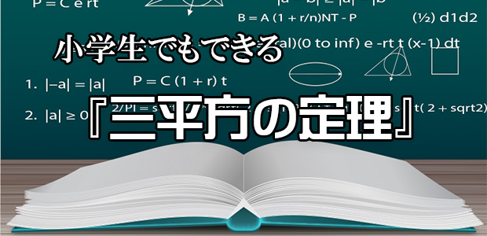
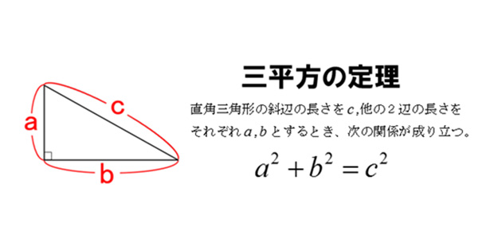
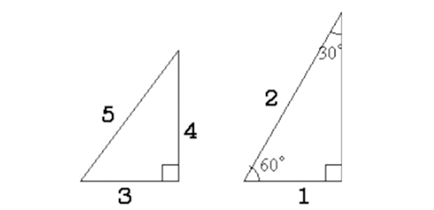
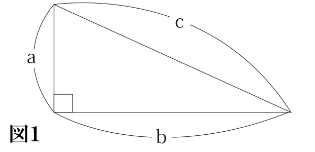
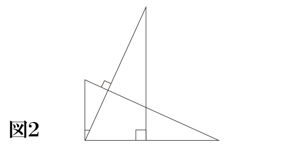
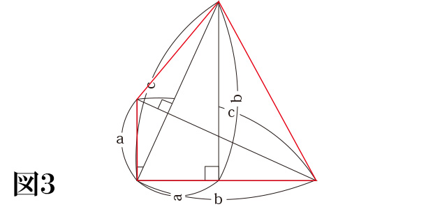
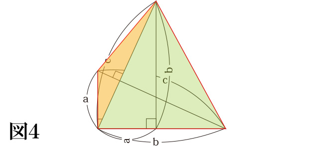
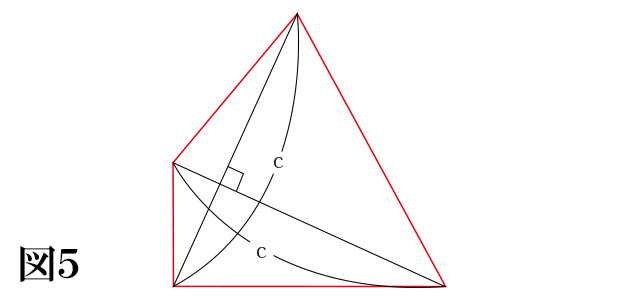
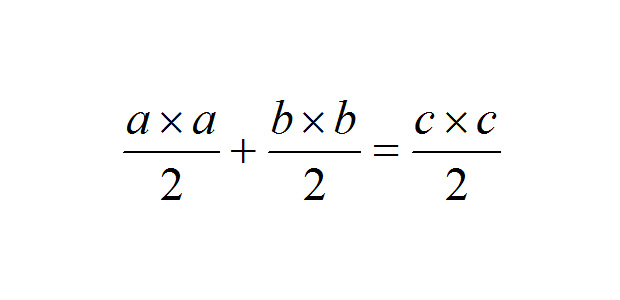
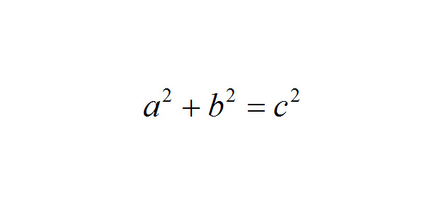

Freepikによるデザイン
以前のブログ（ちょっと真面目に数学の話～立体の体積編～）で‘爪形’の体積について書いたときに、熱心な読者から質問メールがきました。
それについてはＨＰ内で返答しましたが、以来ポツポツと理数系の質問や相談を受ける機会が増えたんです。
今回はそんな質問の一つを紹介し、お答えしたいと思います。
『小学生の子にピタゴラスの定理を教えたいのですが、何か良い方法はありますか？』
質問者は先生なのでしょうか。算数の授業において、話の流れで小学生にも幾何学史上この上なく美しいピタゴラスの定理を紹介したい…ということなのかもしれません。
結論から言いましょう。良い方法は、あります！
ピタゴラスの定理（三平方の定理）は本来中学３年生で習う以下のようなものです。

有名な形の直角三角形は小学生でも知っている場合があって、次のようなものです。

左の形は、３つの辺全てが整数になるパターンでよく見かけます。右の形は、正三角形を二等分したものだということから、一番短い辺を１としたときに斜辺が２になるといった具合です。
ただ、私立中学を受験する小学生は単に「こういう形の直角三角形がある」ということを覚えさせられていて、例えば直角を作っている２つの辺が６と８ならば、左のパターンの直角三角形を２倍に拡大した図形だから、斜辺が１０だとわかるわけです。
そういうわけで、普通は小学生ならば「特別に知っている直角三角形がある」というだけで、三平方の定理の本質をわかっているわけではありません。
で、いろいろ調べてみるとわかるのですが、三平方の定理を証明しようとすると、大抵の場合は「三角形の合同条件」や「文字式のカッコの外し方」など、中学レベルの計算が出てきてしまいます。
そこで、池村オリジナルの証明をここで紹介します。
これは小学生の図形の知識だけで理解できます。
図１）まずは直角三角形を用意します。

図２）これとまったく同じ直角三角形を90°回転させて重ね合わせます。図形全体を90°に回転させたので斜辺（長さｃの辺）自体も90°回転しますので、斜辺どうしは90°に交わります。

図３）ここで赤い線で囲んだ四角形に注目し、その面積を考えます。


まず図４のように２つの三角形に分けて考えると、左の三角形は底辺a、高さもaとなり、右の三角形は底辺も高さもbとなります。
したがって、四角形の面積は「a×a÷2＋b×b÷2」となります。

一方、図５のような視点で見ると、この四角形は‘対角線が直交している四角形’であると気づきます。
そうすると、ひし形の面積と同様に計算することができ、「c×c÷2」となります。
さて、以上から四角形の面積を２通りの方法で表したことにより、

が成り立つので、

を導くことが出来ます。
いかがでしたか？
では、またの機会のお会いしましょう！